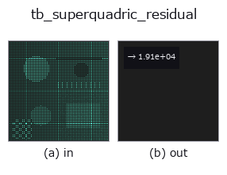

typed op• Datenarten: points → feature
• Aufruf: fullseye.apply(img, "tb_superquadric_residual", a=0.5, b=0.5) (das 2-D-Modell ist ein Bild plus zwei skalare Regler a,b∈[0,1])

*Die Abbildung ist die tatsächliche Ausgabe auf einer synthetischen 128×128-Eingabe. Links Eingabe, rechts Ausgabe. Punktwolken als Draufsicht-Streudiagramm (Helligkeit = z), 1-D-Reihen als Linie, Volumen als Maximum-Projektion entlang z, Videos als mittleres Bild, komplexe Bilder als Betrag; Rückgabewerte, die kein Bild ergeben, werden als Werte gezeigt.*
*Regler a ändert die Ausgabe nicht (gemessen: identisch bei 0,1 / 0,5 / 0,9).*
*Regler b ändert die Ausgabe nicht (gemessen: identisch bei 0,1 / 0,5 / 0,9).*
Stufen (die vorangehenden Ops → dieser Op, von links nach rechts):
▸ tb_superquadric_residual: stages (docs site)
Volumenkorrigiertes Gross-Boult-Residuum: mean( (sqrt(a1 a2 a3)(F^eps1 - 1))^2 ).
> Die ausführliche Beschreibung unten ist der Originaltext — Zusammenfassung und Überschriften sind übersetzt.
`inside_outside(points, a, eps, R, t)` で各点の内外関数 F を求め、点ごとの残差
`r_i = sqrt(a1*a2*a3) * (F_i**eps1 - 1) の 2 乗平均を float で返す。表面上の点は F=1` なので
残差 0、内側は負・外側は正の残差になる(2 乗するので符号は消える)。`fit_superquadric` が
最小化しているのと同じ量で、返り dict の `residual` もこの値。
• `points`: (N,3) にリシェイプできる点群(world 座標)。
• `a: 半径 (a1,a2,a3)。eps: 形状指数 (eps1,eps2)(F の計算には両方、外側の F**eps1` には
`eps1` だけを使う)。
• `R/t: 姿勢(X_body = R.T @ (X - t))。None` なら単位回転 / 原点。
数値保護: F は [0, 1e12] にクリップし、`a1*a2*a3` は 1e-12 以上に持ち上げてから sqrt を取る
(退化パラメータで inf/NaN にならないため。表面近傍の値には影響しない)。
次元: `sqrt(a1 a2 a3) は長さの 3/2 乗、F^eps1 - 1` は無次元なので、返り値は長さの 3 乗の
次元を持ち点群のスケールに依存する。大きさの違う物体どうしの比較には向かない。真の点-表面
ユークリッド距離ではなく半径距離近似であること、外れ値に無防備なことはモジュール docstring
のとおり。
2-D 進化レジストリへ橋渡しした 3d の op `superquadric_residual。実装は同じで、呼び出し規約だけ op(v, a, b) に合わせてある。この op に調整点は無く、a も b` も使われない。
• Katalog der Beispieldaten (Download-URLs / Lizenzen) — 2-D nutzt skimage.data (BSD/Public Domain) plus synthetische Bilder, 3-D nennt Download-URLs echter Datenquellen (Stanford, PDS, …).
• Herkunft und Literatur der Operatoren — die Quellen der Forschung/Verfahren, auf denen diese Operatorfamilie beruht.
Das Programm unten ist nachweislich lauffähig (gleiche Eingabe wie die Abbildung). In der Studio-Hilfe wird dieser Block zu Schaltflächen, die es sofort laden und ausführen.
img_to_points 0.50 0.50 tb_superquadric_residual 0.50 0.50
▸ Load this pipeline · Load & run
Die folgenden Beispiele rufen den zugrunde liegenden Ledger-Op superquadric_residual auf. Dieser Brücken-Op ist dieselbe Implementierung, angepasst an die Konvention fn(v, a, b); das Verhalten gilt unverändert (nur die Aufrufform unterscheidet sich).
• superquadric_fit — py -3.11 examples_3d/superquadric_fit.py
feature als Eingabe)typed)tb_points_to_voxel · tb_estimate_point_normals · tb_iss_keypoints · tb_angle_3points · tb_project_points · tb_render_point_depth · tb_statistical_outlier_removal · tb_radius_outlier_removal
*Provenance: ops.py — 2D Operator-Registry. Diese Notiz wird von tools/opdocs.py md erzeugt (nicht von Hand bearbeiten).*
© 2026 Kazufumi Furuse — Fullseye operator documentation. Licensed under Apache-2.0.
{kind=link}